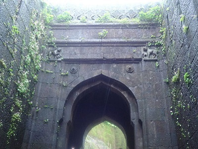
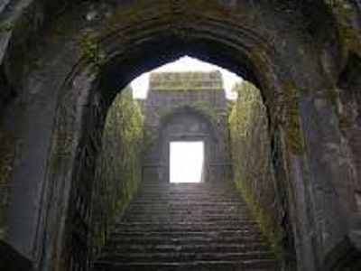
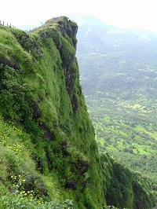
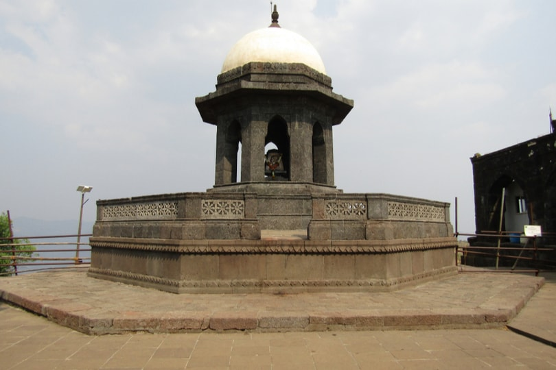
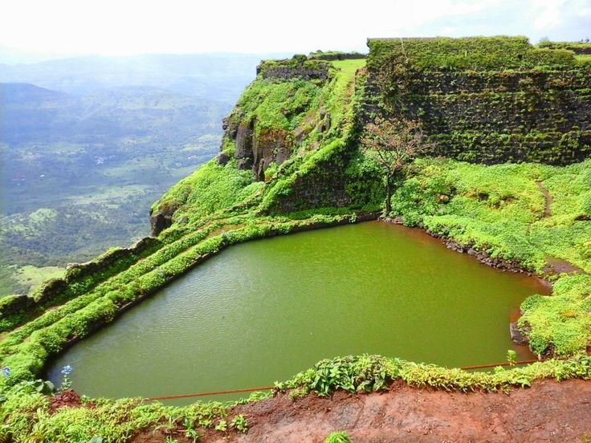
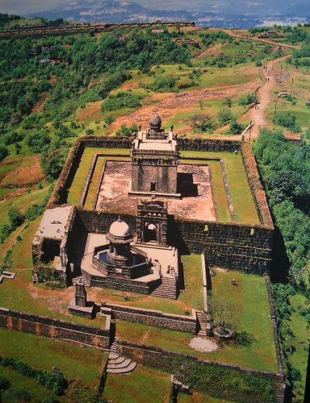

Major Features
- The main palace was constructed using wood, of which only the base pillars remain. The main fort ruins consist of the queen's quarters, six chambers, with each chamber having its own private restroom. The chambers do not have any windows. In addition, ruins of
three watch towers can be seen directly in front of the palace grounds out of which only two remain as the third one was destroyed during a bombardment. The Raigad Fort also has ruins of a market which was accessible to horseback riders. The fort also overlooks an
artificial lake known as the Ganga Sagar Lake.
The only main pathway to the fort passes through the "Maha Darwaja" (Huge Door) which was previously closed at sunset. The Maha Darwaja has two huge bastions on both sides of the door which are approximately 65-70 feet in height. The top of the fort is
600 ft above this door.

- The king's court, inside the Raigad Fort has a replica of the original throne that faces the main doorway called the Nagarkhana Darwaja. It faces the East Side. It was here where Shivaji Maharaj's Rajyabhishek took place. This enclosure had been acoustically designed to
aid hearing from the doorway to the throne. A secondary entrance, called the Mena Darwaja on south side, was supposedly the private entrance for the royal ladies of the fort that lead to the queen's quarters. The convoy of the king and the king himself used the Palkhi Darwaja.
on the north side. To the right of Palkhi Darwaja, is a row of three dark and deep chambers. Historians believe that these were the granaries for the fort.
From the fort, one can view the execution point called Takmak Tok, a cliff from which sentenced prisoners were thrown to their death. This area has been fenced off.
 
- A statue of Shivaji Maharaj is erected in front of the ruins of the main market avenue that leads to the Jagdishwar Mandir, which has Hiroji Indulkar's name engraved on the first step, his own Samadhi and that of his dog named Waghya.
The Samadhi of Rajmata Jijabai, Shivaji Maharaj's mother, can be seen at the base village of Pachad. Additional famous attractions of the fort include the Khubladha Buruj, Nane Darwaja and the Hatti Talav (Elephant Lake). Henry Oxienden
was on the fort from 13th may to 13 th june 1674 & he quoted "We arrived at the topp of that strong mountain about sunn sett, which is fortified by nature more then art, being off very difficult access, and but one advance to it, which is
guarded by two narrow gates, and fortified with a strong high wall, and bastions thereto. All the other parte of the mountaine is a direct precipice, so that it is impregnable except the treachery of some in it betrayes it. On the Mountaine
are many strong buildings, as the Rajahs Court,and houses for other Ministers of State, to the number of about 300, It is in length about 21 miles and breadth a mile, but noe pleasant trees nor any sort of grains growes thereon. Our house was about a mile from the Rajahs Pallaoe,
into which wee retired with noe little content."
  